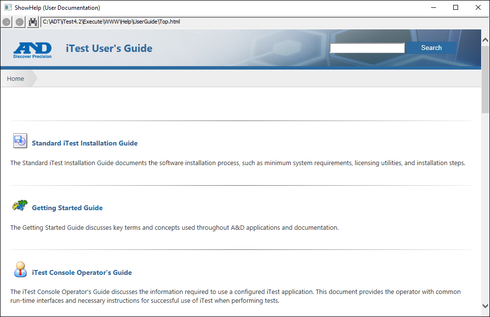

iTest User's Guide
The ShowHelp application opens the user documentation and can be accessed in the $EXECUTEDIR. When launched, a window (similar to the one shown below) will display:
ShowHelp (User Documentation)

In addition, the ShowHelp application can be used to display a specific help topic by using either a command line or a mailslot message.
Syntax:
ShowHelp.exe /url UserGuide\Help_Topic_Page.html
Example:
ShowHelp.exe /url UserGuide\ADT_Bar.html\\.\mailslot\Softpanel>>$EXECUTE;ShowHelp.exe /url UserGuide\ADT_Bar.htmlIf the help topic page contains any spaces, then the syntax is as follows:
Syntax:
ShowHelp.exe /url "UserGuide\Help Topic Page.html"
Example:
ShowHelp.exe /url "UserGuide\ADT Bar.html"\\.\mailslot\Softpanel>>$EXECUTE;ShowHelp.exe /url "UserGuide\ADT Bar.html"